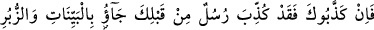
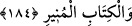
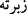
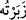
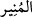

öldürdünüz. Eğer ortaya attığınız şeyi getiren peygambere inanacağınıza delâlet eden bu
sözünüzde doğru insanlar iseniz, onları niçin öldürdünüz?” Zekeriya, Yahya ve diğer
peygamberler başka mûcizelerle birlikte, dediğiniz mûcizeyi de getirdiği halde, size ne
oldu da onlara inanmayarak öldürmeye cür’et ettiniz?
184. (Rasûlüm!) Eğer seni yalancılıkla itham ettilerse (yadırgama); gerçekten,
senden önce apaçık mûcizeler, sahifeler ve aydınlatıcı kitap getiren nice
peygamberler de yalancılıkla itham edildi.
“Eğer seni yalancılıkla itham ettilerse” ifadesiyle Allah Teâlâ Hz. Peygamber
(s.a.)’i tesellî etmeye başlamış bulunmaktadır. Çünkü kendisinden önce de pek çok
peygamber tekzîb edilmiştir. Açık mûcizelerle, hikmetli sözleri ihtivâ eden kitaplarla
gönderilmiş olmalarına rağmen onlar da yalanlanmıştır. “Zübur” “Zebur” kelimesinin
cem’idir. Ve “onu güzel buldum” mânasındaki ( __WORD__ ) kelimesinden gelir. Yahut da “onu
men ettim” mânasındaki ( __WORD__ )’dan gelen bir kelime olup menedici, öğüt verici kitaplar
mânasındadır. “Ve aydınlatıcı kitaptan maksat ise” Tevrat, İncil ve Zebur’dur.
Kur’ânî kullanıma göre, “kitap” kelimesi, şerîat ve hüküm ihtivâ eden kitaplardır. Bu
sebepledir ki kitap ve hikmet kelimeleri, çoğu yerde birbirine atfedilmiş olarak vârid
olmuştur. ( __WORD__ ) kelimesi ise, emir ve nehy ile aydınlatan apaçık demektir.
Allah Teâlâ, nasıl ki bazı ümmetlerin bazı peygamberlere galip gelerek onlara îman
etmeden önce, ya da îman ettikten sonra onları öldürmelerini takdir etmiş ise, bazı
nefsânî sıfatların da bazı rabbânî ilhamlara ve rahmânî vâridâta galebe çalarak bunları
mahvetmesini de takdir etmiştir. Nitekim Cenâb-ı Mevlâ bu ilhamlar, nefsânî sıfatlara
boyun eğmeden önce, ya da eğdikten sonra, zâten olacak olan bir şeyi yerine getirmek
için şöyle buyurur: “Allah, dilediğini mahveder, dilediğini de sâbit kılar.” (er-Ra’d,
13/39)
Hülâsa-i kelâm, ruh, nefsânî sıfatlarla yakınlaşarak nefis gibi alçaklaşır ve kötü
sıfatlar, ilhamları mağlûb ettiği gibi, ruhu da mağlûb eder. Öyleyse sâlikin, kötü ve
yoldan çıkarıcı müfsid kişilerle arkadaşlık etmekten ve nefsin sıfatlarından uzak
durması gerekir.
İnsana arkadaşından huy bulaşır,
Öyleyse kötülerle yüzyüze olmaktan sakın
Çünkü rüzgar kötü bir ovadan geçer
Onun kötü havasını başka yerlere alır gider.